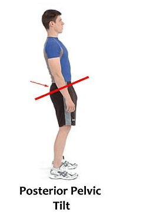
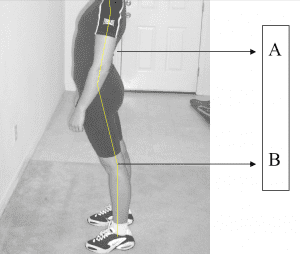
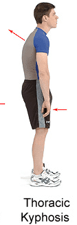
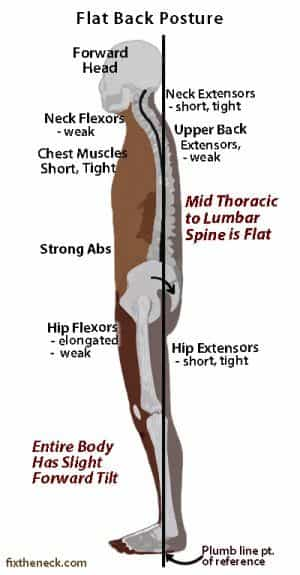
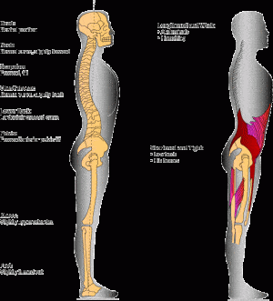
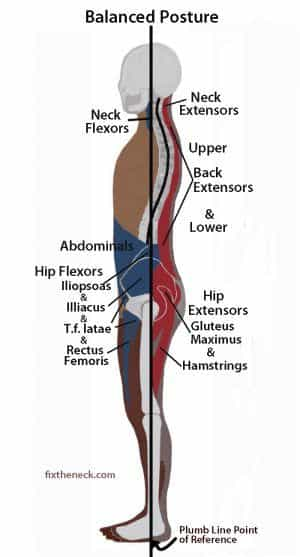
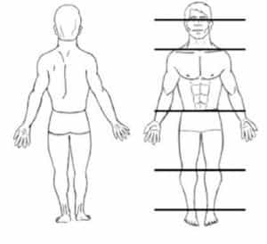
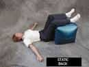

< < < Back
Why You Likely Have Bad Posture – Return Of Kings
Fitness enthusiasts will criticize a person’s fitness (or lack thereof) for a variety of reasons, some of which are more warranted than others. Many of these criticisms have a significant overlap with what the manosphere criticizes “beta males”, simps, and male feminists for-and from what I’ve noticed, one of the biggest ones is posture.
In these circles, posture is used as almost a shorthand for everything that is unmasculine—references to “hunched over beta males” with womanly body language abound on men’s websites around the blogosphere. And why shouldn’t this be the case? Men and women do tend to have different body language, particularly when they’re deliberately trying to cultivate the virtues of their respective sexes—“power poses” are a well known phenomenon to anybody who works in a corporate environment.
Bad Posture
As with most things, it is a lot easier to describe the wrong way to do things than to do the right thing—however, as this article is meant to be instructive, it is worth going over what bad posture is, before proper posture is discussed.
There are numerous ways to stand incorrectly, but all of them have a few things in common: The biggest one is that the spine is not in a neutral, semi-relaxed position
Sway back is a posture in which the torso above the waist leans slightly back, as if the person was carrying something in front of their chest.

Hollow back is sort of the opposite of sway back, in which the lumbar curves too much, leaning the torso forward and making the belly bulge outwards-an easy way to characterize this posture is to imagine an infant who is learning how to walk.

Rounded shoulder posture is, as its name implies, where the shoulders slump forward in a “gorilla-esque” manner. In this posture, the upper back curves convexly and the head and neck lean forward, in addition to the rounded gorilla shoulders

Flat pelvis(or flat back) is not as noticeable as the others, but can still lead to reduced bodily function-this is where the lower back does not curve enough, which leads the torso and neck to sag slightly forward.

Military posture, ironically thought of as a “proper” posture for many years, is a mild form of problem posture as well—this is essentially where the muscles are strained and overly tight, exaggerating all of the elements of good posture to the point where the posture is no longer good.

Many factors can cause bad posture, most of which are either created or exacerbated by the forces of modernity—the worst of these being the act of extended sitting. When holding the same position for a long period of time, it’s only natural that your shoulders and torso will begin to sag.

In addition to this, sitting also removes the light muscular flexion that keeps the torso in its proper position when standing. The harm of sitting can, however, be easily remedied—just stand up and stretch every hour or so.
Other bad habits can cause improper posture, such as walking around with your smart phone at chest level or wearing a backpack improperly.
Now that you know how bad posture is formed and exacerbated, how can one correct it?
Good Posture
It is commonly believed that “good posture” is something stiff and military-esque, likely due to bad memories of being lectured on our posture from various authority figures in our use. In reality, proper posture should be relatively relaxing and invigorating—it should feel “tight” and “snug” without being stiff and stifling. Eventually, after you have practiced good posture for a few months, being in improper posture will start to feel uncomfortable for you.
Also bear in mind that there is no one universal proper posture—it differs for each person, but with that being said:
If proper posture can be defined in one word, that word would be “symmetry.” Ears are even with the shoulders and the shoulders are straight. The hips are straight and the weight is evenly distributed to each foot. There is a slight and natural curvature to the neck and lower back. Observe the pictures below:


Now that you know what good posture looks like, you are likely wondering how you can obtain it—and the answer is with various stretches and exercises.
Several of the shoulder mobility exercises I showed you in this article will work wonders for stiff upper bodies, and in many cases will clear up posture problems in and of themselves. In case that isn’t enough, there are a few other exercises you can utilize:
Standing against a wall can clear up a lot of problems: Stand so your head, shoulders, and buttocks are against a wall, and place your feet about 4-5 inches away from the wall. Stay like this for a few minutes a day. In addition to being used to determine what your body’s proper posture should be like, this acts as a stretch, and can loosen up some tense muscles.
The static back stretch is another one you can use: Lie on the floor and place your legs on top of a bed, chair, or ottoman. Your knees should bend at a 90-degree angle. Get your hips as close to the object as possible. Lay your arms on the ground at your side. Hold for 5-10 minutes.

And of course, the last stretch I would do for posture is the subject of my very first Return Of Kings article, the always useful bridge. Doing any bridging will help your posture, so follow that article for details. I cannot stress enough how important bridging is to the physical man.
No matter how you go about doing it, good posture can be yours quite easily.
Read More: Does Your Posture Suck?